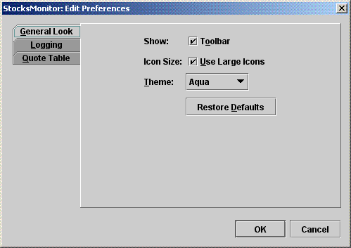

Diálogos Estandarizados
Usar preferencias
Un diseño ventajoso permitiría un acceso programático rápido a las preferencias, pero construiría la IGU solo si fuera necesario.
Ejemplo
Un estilo común es usar un JTabbedPane, con cada panel correspondiendo a un conjunto de preferencias
relacionadas:

Aquí, cada panel se define como una implementación de una interfaz - PreferencesEditor:
package hirondelle.stocks.preferences; import javax.swing.JComponent; /** * Permite la edición de un conjunto de preferencias de usuario relacionadas. * * <P>Las implementaciones de esta interfaz no definen un IGU "autónomo", * sino más bien un componente (usualmente un <tt>JPanel</tt>) que puede ser usado por el * llamador de cualquier forma que quiera. Habitualmente, un conjunto de objetos <tt>PreferencesEditor</tt> * se coloca en un <tt>JTabbedPane</tt>, uno por panel. */ public interface PreferencesEditor { /** * Devuelve un componente del IGU que permite al usuario editar este conjunto de preferencias * relacionadas. */ JComponent getUI(); /** * El nombre de la pestaña en la cual este <tt>PreferencesEditor</tt> * será colocado. */ String getTitle(); /** * El mnemónico que aparecerá en el nombre de la pestaña. * * <P>Debe coincidir con una letra que aparece en {@link #getTitle}. * Usa las constantes definidas en <tt>KeyEvent</tt>, por ejemplo <tt>KeyEvent.VK_A</tt>. */ int getMnemonic(); /** * Almacena las preferencias relacionadas tal como están actualmente mostradas, sobreescrbiendo * todas las configuraciones corrspondientes. */ void savePreferences(); /** * Restablece las preferencias relacionadas a sus valores predeterminados, pero solo como * se presentan en la GUI, sin afectar los valores de preferencia almacenados. * * <P>Este método puede no aplicar en todos los casos. Por ejemplo, si el elemento * representa una configuración que tiene un valor predeterminado con sentido (tal como un nombre * de servidor de correo), el comportamiento deseado puede ser solo permitir un cambio manual. En tal * caso, la implementación de ete método debe ser una no operación. */ void matchGuiToDefaultPreferences(); }
getUI de esta interfaz define el aspecto gráfico de un PreferencesEditor - las
implementaciones no extienden un JComponent, sin más bien devuelven un JComponent
desde el método getUI. Esto permite a los llamantes acceder a los valores de preferencia desde las
implementaciones de PreferencesEditor sin necesariamente construir un IGU.
Aquí tiene un ejemplo de implementación para las preferencias mostradas arriba. Tenga en cuenta que la adicción de estos métodos, específicos a esta clase, que permite el acceso de sólo lectura y programático a los valores de preferencias almacenados (y no los valores de preferencias como se muestran actualmente en la IGU):
hasShowToolBarhasLargeIconsgetThemeObservable, de manera que las clases interesadas puedan registrar su interés en
cambios a este conjunto de preferencias:
package hirondelle.stocks.preferences; import java.util.*; import java.util.logging.*; import java.awt.*; import java.awt.event.*; import javax.swing.*; import java.util.prefs.*; import javax.swing.plaf.metal.MetalTheme; import hirondelle.stocks.util.ui.Theme; import hirondelle.stocks.util.ui.UiConsts; import hirondelle.stocks.util.ui.UiUtil; import hirondelle.stocks.util.Util; /** * Permite la edición de preferencias de usuario relacionados a la apariencia * general de la aplicación, tal como el tamaño de la fuente, el tamaño del icono de la barra de herramientas, el tema, * y similares. * * <P> También permite el acceso programático de solo lectura a las preferencias almacenadas * actualmente para estos elementos. */ public final class GeneralLookPreferencesEditor extends Observable implements PreferencesEditor { @Override public JComponent getUI(){ JPanel content = new JPanel(); GridBagLayout gridbag = new GridBagLayout(); content.setLayout(gridbag); addShowToolbarAndLargeIcons(content); addTheme(content); addRestoreDefaults(content); UiUtil.addVerticalGridGlue(content, 4); matchGuiToStoredPrefs(); return content; } @Override public String getTitle() { return TITLE; } @Override public int getMnemonic() { return MNEMONIC; } @Override public void savePreferences(){ fLogger.fine("Actualizando las preferencias generales."); fPrefs.putBoolean(SHOW_TOOL_BAR_KEY, fShowToolBar.isSelected()); fPrefs.putBoolean(USE_LARGE_ICONS, fLargeIcons.isSelected()); fPrefs.put(THEME_NAME_KEY, fThemes.getSelectedItem().toString()); setChanged(); notifyObservers(); } @Override public void matchGuiToDefaultPreferences(){ fShowToolBar.setSelected(SHOW_TOOLBAR_DEFAULT); fLargeIcons.setSelected(USE_LARGE_ICONS_DEFAULT); fThemes.setSelectedItem(Theme.valueOf(THEME_NAME_DEFAULT)); } /** * Devuelve la preferencia de usuario almacenada para ocultar o mostrar la barra de herramientas. */ public boolean hasShowToolBar(){ return fPrefs.getBoolean(SHOW_TOOL_BAR_KEY, SHOW_TOOLBAR_DEFAULT); } /** * Devuelve la preferencia de usuario almacenada para usar iconos grandes. */ public boolean hasLargeIcons(){ return fPrefs.getBoolean(USE_LARGE_ICONS, USE_LARGE_ICONS_DEFAULT); } /** * Devuelve la preferencia de usuario almacenada para el tema a ser aplicado al * Aspecto Java . */ public MetalTheme getTheme(){ String themeName = fPrefs.get(THEME_NAME_KEY, THEME_NAME_DEFAULT); return Theme.valueOf(themeName); } // PRIVADO private static final String GENERAL_LOOK_NODE = "stocksmonitor/ui/prefs/GeneralLook"; private Preferences fPrefs = Preferences.userRoot().node(GENERAL_LOOK_NODE); private static final String TITLE = "Apariencia General"; private static final int MNEMONIC = KeyEvent.VK_G; private static final boolean SHOW_TOOLBAR_DEFAULT = true; private static final String SHOW_TOOL_BAR_KEY = "ShowToolbar"; private static final boolean USE_LARGE_ICONS_DEFAULT = false; private static final String USE_LARGE_ICONS = "UseLargeIcons"; //El nombre del tema se asocia al Tema usando Theme.valueOf private static final String THEME_NAME_DEFAULT = "Default"; private static final String THEME_NAME_KEY = "ThemeName"; private JCheckBox fShowToolBar; private JCheckBox fLargeIcons; private JComboBox<MetalTheme> fThemes; private static final Logger fLogger = Util.getLogger(GeneralLookPreferencesEditor.class); private void matchGuiToStoredPrefs(){ fShowToolBar.setSelected(hasShowToolBar()); fLargeIcons.setSelected(hasLargeIcons()); fThemes.setSelectedItem(getTheme()); } private void addShowToolbarAndLargeIcons(JPanel aContent){ JLabel toolbar = new JLabel("Mostrar:"); aContent.add(toolbar, getConstraints(0,0)); fShowToolBar = new JCheckBox("Toolbar"); fShowToolBar.setMnemonic(KeyEvent.VK_O); aContent.add(fShowToolBar, getConstraints(0,1)); JLabel iconSize = new JLabel("Tamaño de Icono:"); aContent.add(iconSize, getConstraints(1,0)); fLargeIcons = new JCheckBox("Usar Iconos Grandes"); fLargeIcons.setMnemonic(KeyEvent.VK_U); iconSize.setLabelFor(fLargeIcons); aContent.add(fLargeIcons, getConstraints(1,1)); } private void addTheme(JPanel aContent) { JLabel theme = new JLabel("Tema:"); theme.setDisplayedMnemonic(KeyEvent.VK_T); aContent.add(theme, getConstraints(2,0)); DefaultComboBoxModel<MetalTheme> themesModel = new DefaultComboBoxModel<MetalTheme>( Theme.VALUES.toArray(new MetalTheme[0]) ); fThemes = new JComboBox<MetalTheme>(themesModel); theme.setLabelFor(fThemes); aContent.add(fThemes, getConstraints(2,1)); } private void addRestoreDefaults(JPanel aContent) { JButton restore = new JButton("Restaurar los valores predeterminados"); restore.setMnemonic(KeyEvent.VK_D); restore.addActionListener( new ActionListener() { @Override public void actionPerformed(ActionEvent event) { matchGuiToDefaultPreferences(); } }); GridBagConstraints constraints = UiUtil.getConstraints(3,1); constraints.insets = new Insets(UiConsts.ONE_SPACE, 0,0,0); aContent.add( restore, constraints ); } private GridBagConstraints getConstraints(int aY, int aX){ GridBagConstraints result = UiUtil.getConstraints(aY, aX); result.insets = new Insets(0, 0, UiConsts.ONE_SPACE, UiConsts.ONE_SPACE); return result; } }